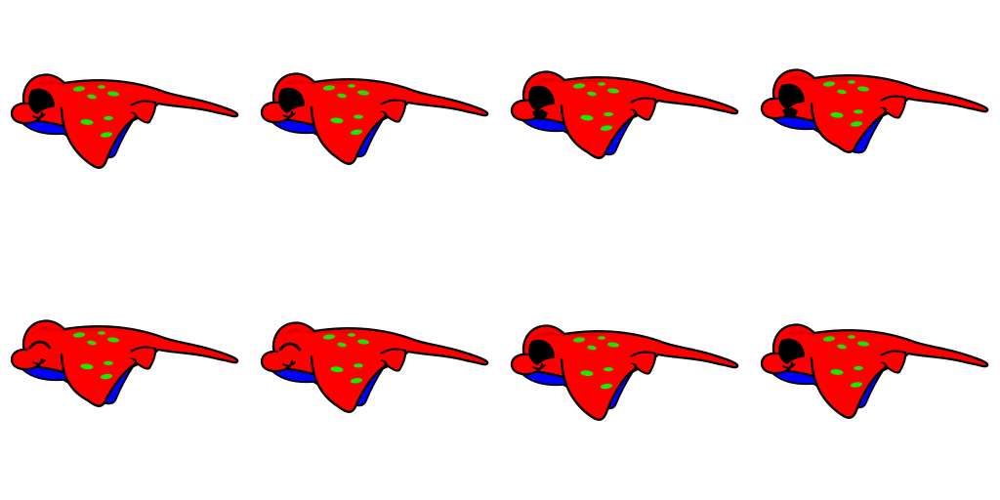
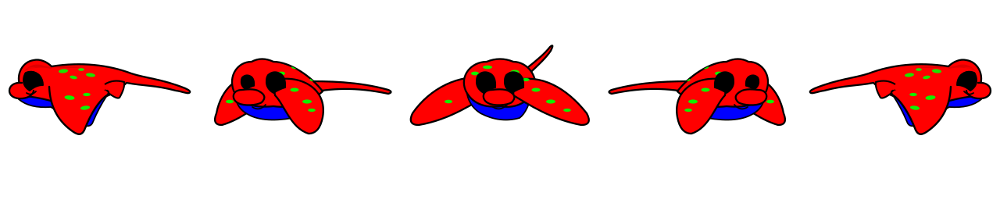

Feeding: eight matched frames


96px original
96px mask
Same existing original art, not a new approved treatment. Red = dorsal, wings and snoot; green = markings; blue = belly; black = protected face details/outlines. Transparency and paint stacking are retained. RGB channels are composited weights, not binary IDs.



256×256 cells, centered (128,128); feed 4×2, direction 5×1. Keep the original color atlas and mask aligned one-to-one. Masks are data: avoid color-space conversion, lossy compression or cross-cell sampling. Preserve source alpha and protected detail weighting; do not display the mask as art. The actual shader, import/filtering and rasterization contract must be agreed with architect. No new species or game files.
Rebuild with Node: node mask.js ../master-v4/feed-atlas.svg feed-mask.svg and node mask.js ../master-v5/turn-atlas.svg turn-mask.svg. Original source: 14ec8dc40b3589c5bceb63a9968b2d5539ee96f0; no external pixels or provider calls. Unknown paint values fail closed.
Executed connector checks: 15 passed (determinism, preserved non-paint structure, channels, unique IDs and local references, unknown paint rejection, two local sample fingerprints). One manually transferred idle cell was rendered locally with CairoSVG and Pillow: exact matching alpha, bounds (10,75,245,173), all three channels present. Fingerprints are noncryptographic; full-atlas raster equality, browser/engine behavior, shader appearance and human approval remain unverified. Palette classification is specific to current Blueberry colors; future species should use semantic region tags instead of assuming these hex values.